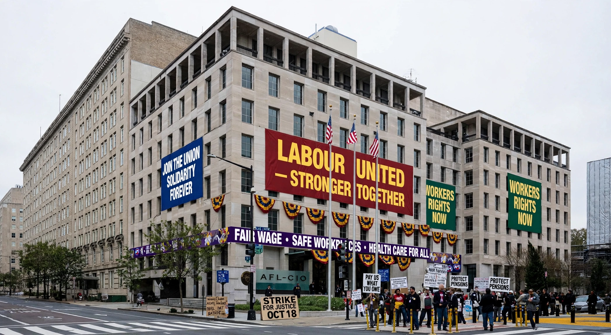

AFL-CIO

| Full name | American Federation of Labor and Congress of Industrial Organizations |
|---|---|
| Founded | 5 December 1955 |
| Predecessors | American Federation of Labor; Congress of Industrial Organizations |
| Headquarters | AFL-CIO Building, Washington, D.C. |
| Members | About 12.5–13 million (affiliated unions) |
| President | Liz Shuler (from 2021) |
The American Federation of Labor and Congress of Industrial Organizations (AFL-CIO) is the largest federation of trade unions in the United States. It is made up of more than 60 national and international unions, together representing roughly 13 million active and retired workers.
History
The federation was formed in 1955 by the merger of the American Federation of Labor (AFL), founded in 1886 under Samuel Gompers, and the Congress of Industrial Organizations (CIO), which split from the AFL in 1935 under John L. Lewis to organise workers on an industrial rather than craft basis. The reunified federation's first president was George Meany, followed by Lane Kirkland (1979–1995), John Sweeney (1995–2009), Richard Trumka (2009–2021) and Liz Shuler, elected in 2021 as its first woman president.
Activities
The AFL-CIO co-ordinates political action, lobbying and organising support among its affiliates. It historically aligned with the Democratic Party and played a major role in campaigns for the minimum wage, workplace safety, Social Security and Medicare. In 2005 several large unions, including the SEIU and the Teamsters, split to form the rival Change to Win federation, though some later returned.
See also: AFL–CIO · Trade union